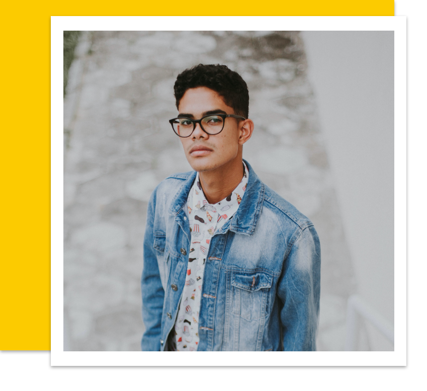
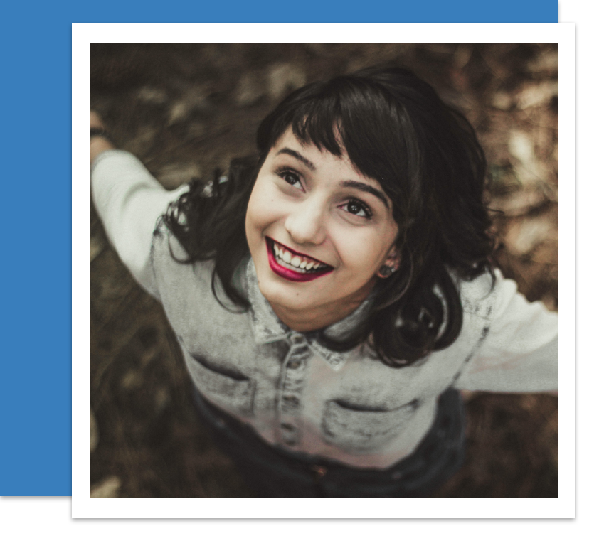

Persona:

Jake is a Graphic Designer for a large design agency in los angles. Jake prides himself on having strange & interesting versions of everyone elses everyday objects.
He likes to make his purchase (big or small) from local responsible crafts people. He has a family but doesn’t own a car. He always brings a reusable cup to the coffee shop.
Family inclusive
Eco conscious
Jake cycles to work and wants his bicycle to be practical but unique.

Jasmine is a 25-year-old former Junior manager who enjoys glamping, duck herding and attending museums. She cares about the environment, and is addicted to video games.
She wears recycled shoes and vintage clothes. She lives in London, UK and doesn’t own a car.
Eco conscious
Would like help with bike maintenance
Jasmine cycles to work and wants her bicycle to be practical